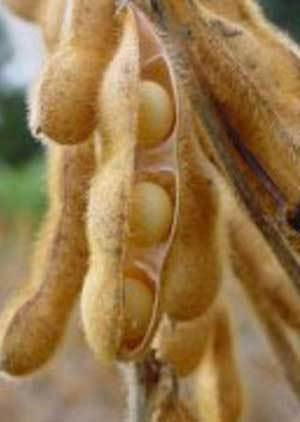

Dieta Personalizzata | Melarossa
2021.04.30 14:00
Nessun Risultato Vedi Tutti i Risultati Dieta Dimagrire con la dieta Consigli del nutrizionista Nutrizione Mangiar sano Alimenti dalla A alla Z Lezioni di cucina Ricette light Ultime dalla cucina Ricette per Categoria Ricette senza glutine Salute Patologie Terapie Naturali Celiachia Psicologia Fitness Workout Sport e Benessere Sport dalla A alla Z Bellezza Notizie Wiki Dieta Melarossa Dieta Dimagrire con la dieta Consigli del nutrizionista Nutrizione Mangiar sano Alimenti dalla A alla Z Lezioni di cucina Ricette light Ultime dalla cucina Ricette per Categoria Ricette senza glutine Salute Patologie Terapie Naturali Celiachia Psicologia Fitness Workout Sport e Benessere Sport dalla A alla Z Bellezza Notizie Wiki Dieta Melarossa Nessun Risultato Vedi Tutti i Risultati Nessun Risultato Vedi Tutti i Risultati
Home » Dieta Personalizzata
Dieta Personalizzata
Annuncio pubblicitarioIscriviti alla dieta personalizzata
Melarossa, l’App che ti aiuta a dimagrire con una dieta personalizzata.
Scaricala subito e sottoscrivi l'abbonamento. La provi gratuitamente per 7 giorni (solo per i nuovi iscritti) e, se deciderai di continuare, pagherai un piccolo abbonamento mensile di 2,99 euro. Il servizio può essere disdetto in qualsiasi momento, anche durante la settimana di prova gratuita.
Questo sito rispetta i principi della carta HONcode .
Verifica qui .
Chi siamo
- Chi siamo- La redazione
- Gli esperti di Melarossa
- Contatti
- Disclaimer
App Melarossa
- Aiuto/Supporto- Testimonial
- F.A.Q.
- Condizioni Generali d'uso
Link Utili
- Privacy Policy- Cookie Policy
- Mappa del sito
Melarossa.it è una testata registrata presso il Tribunale di Roma n. 331 del 14/06/2002 P.Iva 01147141004
Il contenuto di questo sito è puramente informativo e in nessun modo può essere inteso come sostitutivo di una consultazione medica con personale specializzato. Invitiamo gli utenti a seguire i consigli di www.melarossa.it solo se sono soggetti fisicamente sani. In presenza di patologie, intolleranze, allergie, ecc suggeriamo vivamente di rivolgersi a un medico. Leggi il Disclaimer
Melarossa.it partecipa al Programma Affiliazione Amazon EU, un programma di affiliazione che consente ai siti di percepire una commissione pubblicitaria pubblicizzando e fornendo link al sito Amazon.it.
© Copyright 2021 - Grapho s.r.l
Nessun Risultato Vedi Tutti i Risultati Home Page Dieta Melarossa MyMelarossa Dieta Nutrizione Ricette light Salute Fitness Bellezza Notizie Wiki